The Sky and Ambient Light
Ambient light is indirect, diffuse (scattered) ambient light, which in the real world comes from the sky as well as reflections. This can be achieved through the use of environment probes or global illumination (SVOGI). Without one of these sources of ambient light, shadows will be pitch black. The CRYENGINE sky emits no light, whereas on planet Earth, about 23% of sunlight is trapped by the atmosphere surrounding the planet, effectively forming a large, soft, ambient secondary light source (in addition to direct sunlight). The color of the light trapped in the atmosphere varies widely depending on the position of the sun relative to the viewer, from the blue of midday to the warm, saturated colors of sunset and sunrise.
In addition to not providing any actual illumination, the CRYENGINE sky created by Variables → Sky Light → Sun Intensity Multiplier differs from Earth's sky in one other respect: Earth's atmosphere thins as as you ascend above the surface, and with it, the appearance of a sky (created by sunlight trapped in that atmosphere) gives way to the blackness of space. However, the CRYENGINE "sky" is infinite. No matter how high you move the camera, you'll see the skylight color created by Variables → Sky Light → Sun Intensity Multiplier.
In essence, global volumetric fog, whose density you can attenuate with altitude by setting the top multiplier to a near-zero value, can essentially be used to model variable atmospheric density, since the sunlight scattered in the fog contributes greatly to the appearance of a sky.
The Role of Environment Probes
Before enabling SVOGI, it's advisable to add specular reflections to your scene by adding at least one global environment probe (you'll probably end up adding many more, but it's advisable to build from the large to the small details).
Environment probes generate cube maps which are generated as .tiff files. A cube map consists of six still images taken from where the environment probe is located, as if looking perpendicular to the four sides of a cube as well as from above and below it. Those six images are then used to project specular reflections onto reflective surfaces. Since cube maps are static, specular reflections will not include moving entities. Also, if your lighting or environment changes, you'll need to re-generate all of your cube maps. (Level → Lighting → Regenerate All Cubemaps)
Environment probes can also be used to add diffuse (ambient) light through the diffuse multiplier property. However, if you enable SVOGI, the diffuse contribution of environment probes is ignored and replaced by SVOGI's ambient light (unless you enable Constants → Total Illumination Advanced → Use Light Probes to multiply the diffuse contribution of environment probes with SVOGI's, which is not commonly done.)
All levels should include at least one global cube map whose box size encompasses not only the heightmap dimensions, but also anything that you want reflected. (We typically set this to 10,000m in each dimension.) A global environment probe is typically centered over the height map.
If you aren't using SVOGI and want to generate ambient light from environment probes, you'll find that the vertical dimension of your box size can have a strong effect on how much ambient light you get out of an environment probe. Also, keep in mind that an environment probe's box size is extended in every direction from its pivot, which is centered within the entity, so make sure that wherever you have it positioned vertically above the heightmap that its box height is large enough to touch the lowest and highest points on your terrain or entities which you want reflected or affected by ambient light. It's helpful to keep your helpers on and keep the probe's pivot in your viewport so you can see the actual box size. Switching to wireframe view (Alt + W) is also helpful so you can see the probe's box under the terrain.
Interiors should each have their own additional cube map sized the same as the room. You may also want to add additional environment probes to lighten shadows in shady areas, like under heavy foliage.
However, the bottom line is that the ambient light produced by environment probes has a very flat quality that will not produce results as realistic as the gradients that SVOGI's ambient light can achieve. The tradeoff of using SVOGI is primarily performance and complexity; you might spend more time testing and adjusting SVOGI's parameters to balance appearance and performance, but in the end, you'll get better results.
Adding a Global Environment Probe
For now, let's add one global environment probe. Make sure your helpers are enabled (Ctrl + H):
- Use the Create Object tool and select Components → Lighting → Environment Probe. Place it exactly in the horizontal center of your heightmap. For example, if you have a 1024x1024 heightmap, place it at 512, 512, and at the player's eye level on the Z axis (roughly 152cm for an average human).
- Name your environment probe "EP_global" or something that indicates its function according to your naming scheme.
- In the Properties panel, set the Box Size to include everything you'd like reflected. This should be at least as large as your heightmap, but typically is considerably larger. For example, if you have large static meshes in the distance (past the heightmap edge), like mountains, your box size should be large enough to reach them to insure that they'll be reflected.
- At the bottom of the Properties window, click on the Generate button to generate the cube maps. This can take some time, depending on box size and computer speed.
- You will now see specular reflections in the environment probe as you orbit around it, as well as ambient light, most noticeable in the shadows.
- To adjust the contribution of your environment probe to ambient light, set the Color → Diffuse Multiplier parameter. While you can even set the Color property to add colored ambient light globally, this colors everything, so it's typically better to keep it neutral.
- An important property is whether the environment probe's ambient light affects volumetric fog (Affect Volumetric Fog); you can see a significant effect, depending on the color and intensity of the diffuse multiplier and the density of the fog.
Tips on Using Environment Probes:
- Remember that if you change your lighting or level design, you need to regenerate all of your cube maps: Level → Lighting → Regenerate all Cubemaps. (A good thing to do right before a long break, as this can take a while, depending on how many environment probes you have.)
- Keep the Color → Specular Multiplier at 1 if you want PBR materials to render correctly.
- If you plan to change time of day in your level, consider organizing your probes, light components and any time-dependent assets into layers by time of day and use layer streaming to switch the entire layers on and off in game.
- Organize probes by size, and set the Sort Priority properties so the largest, global probe sorts first and the smallest, most detailed sort last. For example, your global probe should have a sort priority of 0. A grid of smaller, localized, exterior probes that cover your entire heightmap (200x200m is a suggested size), use a sort priority of 1. Place smaller exterior probes (30x30m is a suggested size) around detailed areas with a sort priority of 2. Use smaller probes above water volumes to produce more or less accurate reflections with a sort priority of 3 or higher. Finally, once your interior spaces are fully designed and lit, place interior probes with a sort priority of 4 and higher.
- Adjust the Maximum Attenuation Falloff property of your probes to control how soft their edges are, and overlap their boxes somewhat to blend their influence together. To make it easy to see their effects, temporarily maximize their diffuse multiplier and specular multiplier values so you can easily fine tune their positions to blend them into each other, then restore their diffuse multiplier and specular multiplier values, as shown below, where one probe's diffuse color has been set to magenta and the other to green to make their effects obvious.
| Maximum Attenuation Falloff = 64000 (hard edges) | Maximum Attenuation Falloff = 1 (soft edges) |
|---|---|
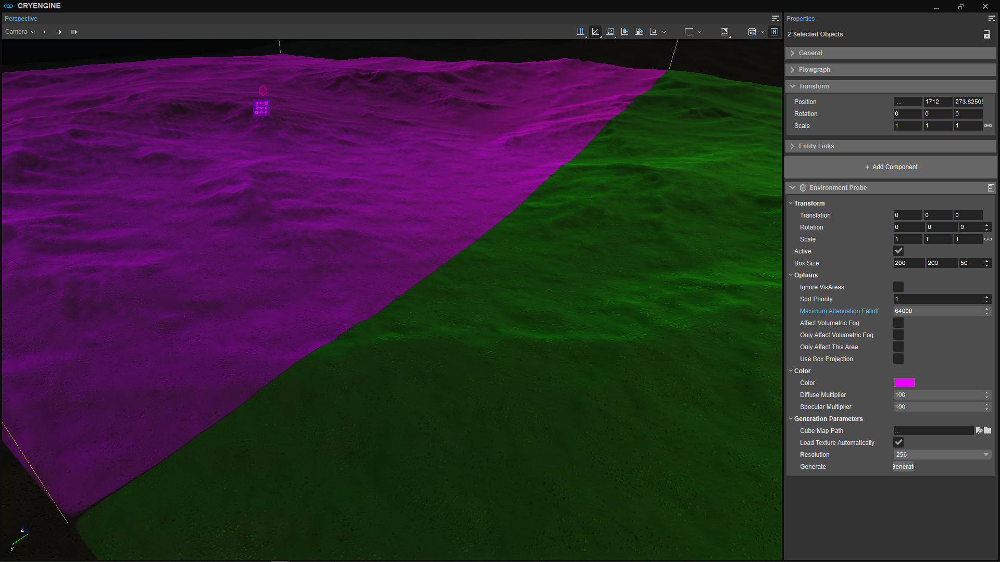 | 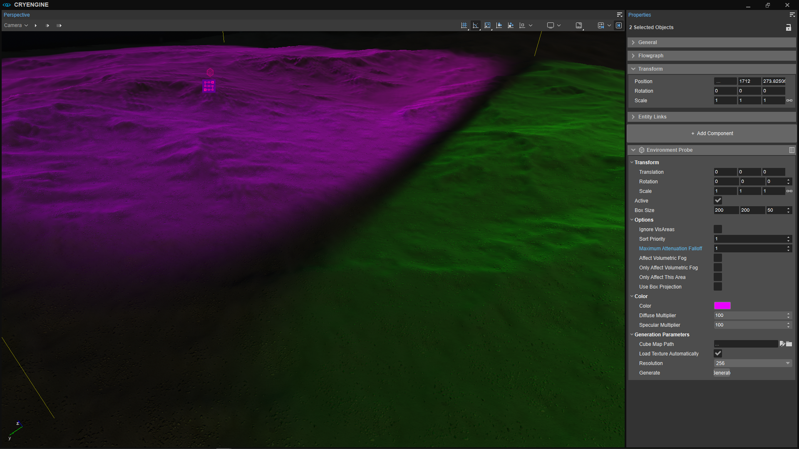 |
| Maximum Attenuation Falloff = 1, boxes overlapping to blend | |
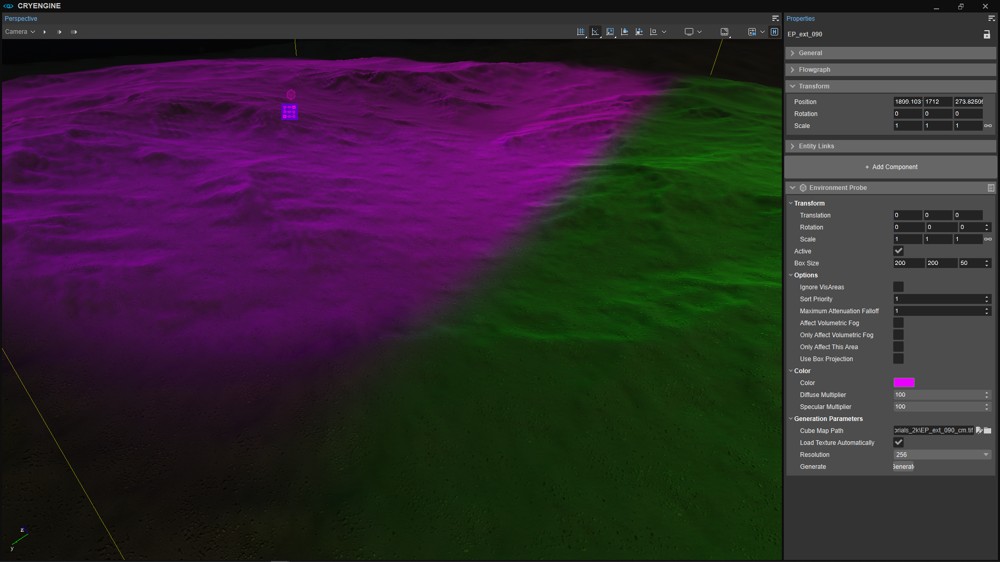 |
- A common use for environment probes (with SVOGI off) in naturalistic lighting situations is to lighten shadows, since the sky in CRYENGINE doesn't actually act as a light source the way the real sky does.
- Use clip volumes to prevent global and exterior environment probes from affecting interior spaces, and to limit the effect of environment probes placed indoors to only those interior spaces. For step by step instructions, see this tutorial.
SVOGI (Global Illumination)
The SVOGI system is based on voxel ray tracing and provides dynamic and indirect bounce lighting from static and most dynamic objects, provides large scale ambient occlusion and indirect shadows from static geometry. In plain English, it provides diffuse ambient light (effectively the otherwise missing skylight when sun intensity > 0) and reflected light through a single bounce of direct light sources (in the default mode).
While it's possible to supply ambient light solely through carefully placed environment probes, you'll see significant advantages by enabling global illumination. For example, you'll notice realistic soft gradients transitioning from light to shadow areas with SVOGI vs. cubemaps, as you can see in these images.
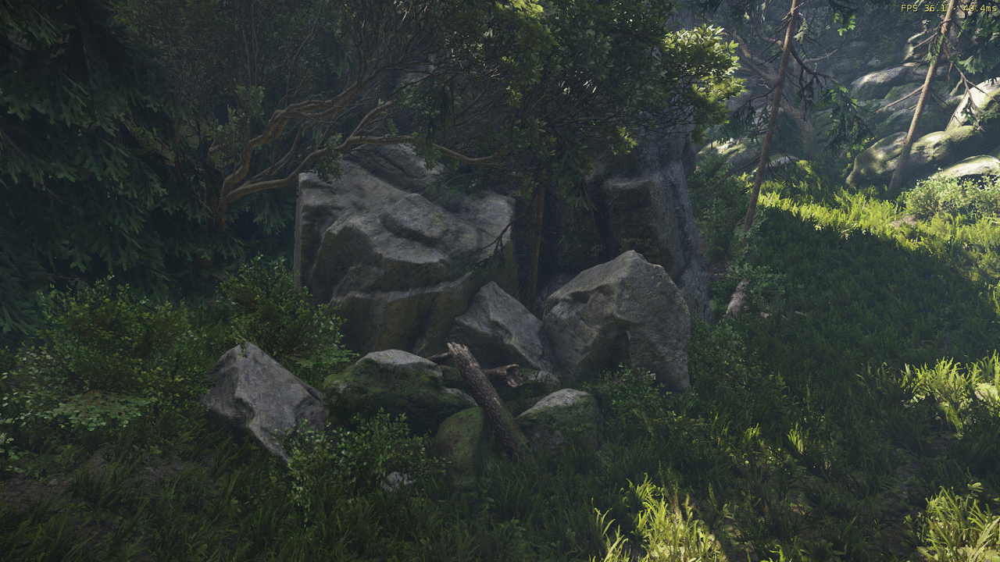
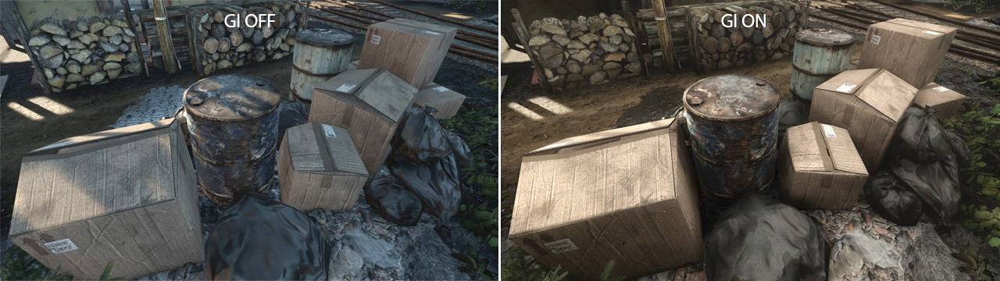
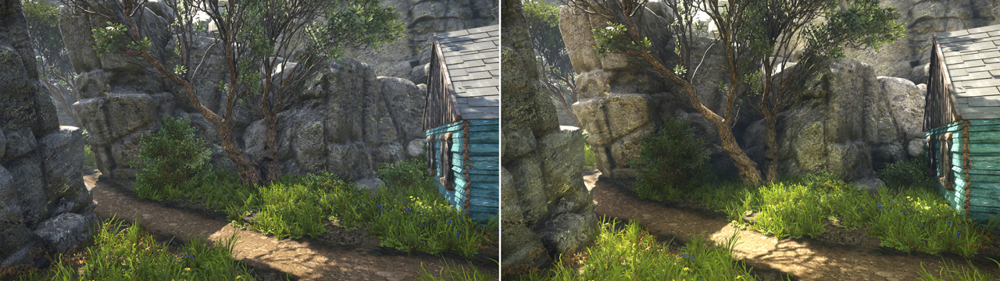
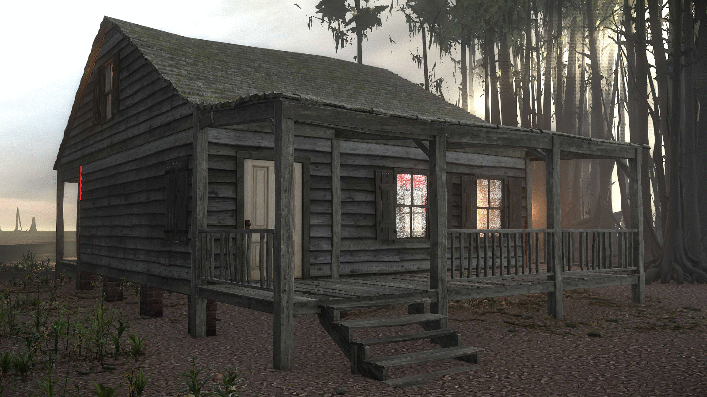
While you'll see many settings for the GI (global illumination) system in the Environment Editor as well as console variables, the default values have been set to be suitable for most realistic use cases, and many of them needn't be changed. Let's review some of the key parameters that you will need to adjust to suit your needs.
SVOGI and Skylight
One important aspect of the SVOGI system to note: if SVOGI → Use TOD Sky Color is set to a value greater than 0, then the ambient light generated by SVOGI will be affected by Fog → Color (top) - even if volumetric fog is enabled. The higher you set Use TOD Sky Color, the more the Fog → Color (top) is going to affect the ambient light generated by SVOGI.
Effectively, enabling SVOGI during the day (when sun intensity is greater than zero) provides skylight luminance, whose intensity and color are affected by these three parameters in the Environment Editor:
- Constants → SVOGI → Use TOD Sky Color: how much the sky color set by Variables → Fog → Color (top) saturates the ambient light. 0 = grey ambient light (fog color is ignored). 1 means the color is controlled entirely by Variables → Fog → Color (top).
- Variables → Fog → TOD Color: presuming SVOGI → Use TOD Sky Color is greater than zero, sets the skylight color.
- SVOGI → Variables → Sky Color Multiplier: brightness of the sky. It’s best to leave this at 1 and use Variables → Fog → Color (top) Multiplier the brightness of the sky, although they effectively do the same thing.
Basic GI Setup
This is the short list of steps to setting up GI; details and guidelines for each setting appear in the next section.
- Global environment probe: before enabling SVOGI, set your time of day, create an environment preset and assign it to your level (drag it from the Environment Editor's asset browser into the Perspective viewport), place your environment probes (particularly a global environment probe), generate cube maps and get things looking as good as they can without SVOGI. Even if you plan to use SVOGI to provide ambient light, you can still use the Diffuse Multiplier in your environment probes to give yourself a preview of how you want your ambient light to look.
- Set Diffuse Bias.
- Set Skylight Intensity
- Set the Injection Multiplier
- Use debugging CVars to check for GI leaking or over-occlusion. Fix any materials that may be causing it.
With regard to step 4, GI leaking happens when a mesh is too thin, and can only be fixed be editing the mesh in your DCC tool (or the Designer Tool, if it's a Designer object).
Key SVOGI Settings:
While the vast majority of GI settings can be left at their defaults, you'll want to pay particular attention to these and adjust them to your liking:
- Integration Mode: for the time being (as of CRYENGINE 5.6), mode 0 is recommended, while modes 1 and 2 should be regarded as experimental. Mode 0 is one-bounce diffuse light.
- Injection Multiplier: Increases the intensity of the bounce light in the GI from direct light sources (sun, and any lights with GI enabled). Values around 1 are a good guideline for real-time performance, but for capturing still "beauty" shots, you may want to temporarily increase this.
- Sky Color Multiplier: Adjusts the intensity of the skylight.
- Use TOD Sky Color: Controls how much the Fog → Color (top) saturates the GI ambient light. 0 makes the ambient light colorless; 1 lets Fog → Color (top) affect the ambient light 100%.
- Diffuse Bias: Sets the minimum light levels by adding a constant ambient light. 0 means that areas of the level will be pure black. Also affected by Fog → Color (top) Multiplier, so Diffuse Bias will need to be re-adjusted if this changes. Using this carefully can save you a lot of trouble by giving you a "free" source of ambient light in the darkest areas of your game. Quite small values (<.1) are typically plenty; over-doing this will simply flatten out your darkest shadow areas. Negative values will allow short-range ambient occlusion (0-3m) to module the diffuse bias value. Use r_ShowRenderTarget svo_fin and turn both Integration Mode and Sky Color Multiplier to zero to see just the effect of Diffuse Bias.
- Translucent Brightness: Controls how bright the vegetation/leaves shader will be to simulate light sub-surface scattering.
- Update Geometry: Toggling this flag off and on again will trigger re-voxelization. Sometimes when you add new objects or move objects around, the GI might look weird because voxels are in the wrong place. Use this option to force re-voxelization if you suspect there are problems. Use e_svoDebug 6 to see the voxelization and help you identify issues.
- Saturation: color saturation of all propagated light.
- Diffuse Cone Width: controls the width of diffuse cones. Wider cones work faster, but may cause over-occlusion and more light leaking. Narrow cones are slower and may produce more noise.
- Cone max length: the maximum length of the ray tracing rays. Longer looks better; shorter works faster. Keep in mind the dimensions of your geometry (for example, the height of your vegetation) and where the player will be and what they can actually expect to see when setting this. If this value is too high, the GI system will lag behind the frame rate and not render completely in each frame.
- Use light probes: if enabled, the diffuse light contribution of any environment probes is multiplied with that of the GI system (not commonly used). If disabled, the contribution of environment probes is completely disabled and replaced by the GI system. If you set the GI system to mode 1 or 2, this allows a global environment probe to be effectively used for skylight instead of Variables → Color (top) and Color (top) multiplier. Typically left disabled.
- Objects max view distance: this voxelizes only objects with their maximum view distance set to this value or higher. To see changes to this setting, toggle Update Geometry off and on (or restart the engine).
Most other parameters are typically best left at the default values.
SSDO Settings
SSDO (Screen Space Directional Occlusion) goes hand in hand with SVOGI. You'll want to experiment with the SSDO console variable values to balance realistic ambient light with performance. Here are a few key values:- r_ssdo: enable/disable SSDO.
- r_ssdoAmountAmbient: this will have a profound effect on probe irradiance, so be careful about over-doing it. This is very helpful with areas like contact shadows (soft shadows under and around the point where a mesh intersects the terrain in a shaded area, for example, as if cast by skylight), and to enhance the three dimensional appearance of geometry.
- r_ssdoRadius: radius of SSDO effect.
- r_ssdoHalfRes: on graphics cards whose system spec is set to Medium or lower, it might be necessary to set this to 0 to maintain performance. This might produce additional noise that you'll notice, for example, in grass.
Light Entity GI Settings
In the Properties → Options → Global Illumination section of the Properties panel for light components, there are a couple of important settings that affect how the light will behave with respect to global illumination:
- Properties → Global Illumination: in integration mode 0 (recommended) set this either to Static light or Dynamic light to enable global illumination for the light component.
- Options → Ambient: enable this to have the light only effect global illumination, and be sure to set the Attenuation Bulb Size to 0 for correct falloff.
Material Transparency to GI Light
Under Material Editor → Advanced → Voxel Coverage, this setting controls how “transparent” the material is in terms of the GI. 0 means that GI light will transmit completely through the material; 1 means the material will block all GI light.
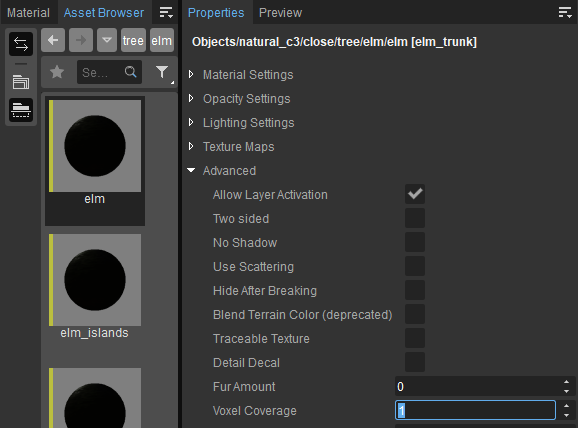
Mesh Component GI Settings
Mesh components have one GI setting under Properties → Rendering Settings → GI and Usage Mode that determines how they interact with the GI system. Here's a comparison of how these options look with a large reflector with a pink diffuse color bouncing sunlight (coming from the left) onto the GameSDK Humvee and hangar. If the color of the material on the reflector changed, it would change the color of the bounced light. The injection multiplier has been set quite high (12) to make it easy to see the bounce light.
| GI and Usage Mode = Disabled | GI and Usage Mode = Static Voxelization |
|---|---|
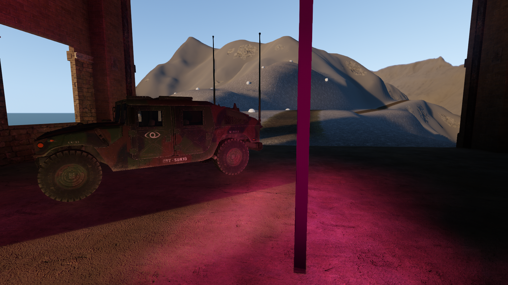 | 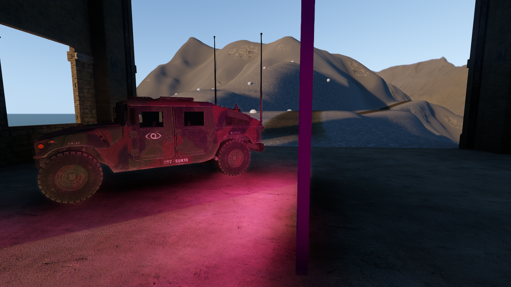 |
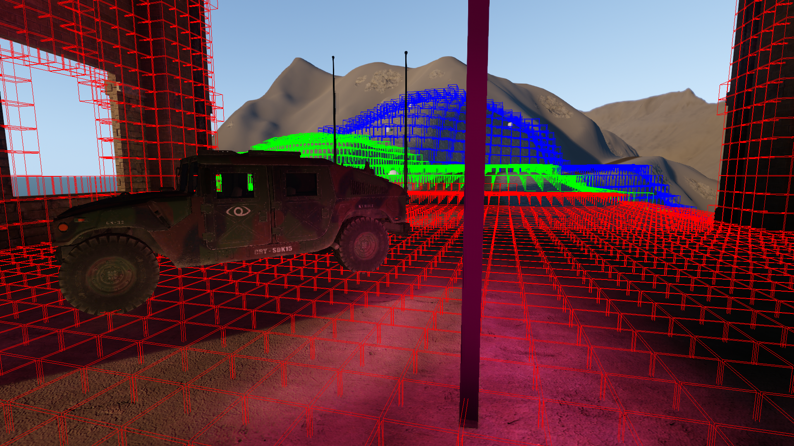 | 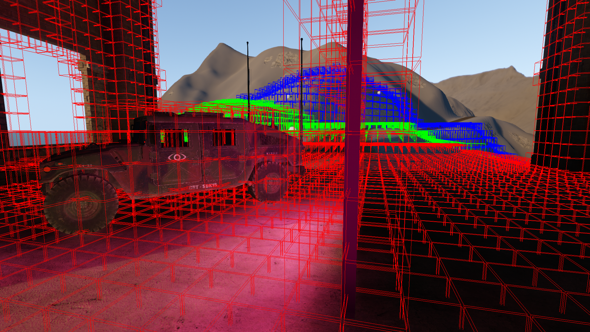 |
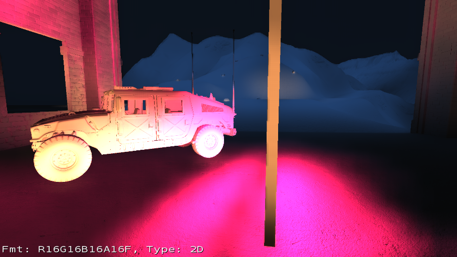 | 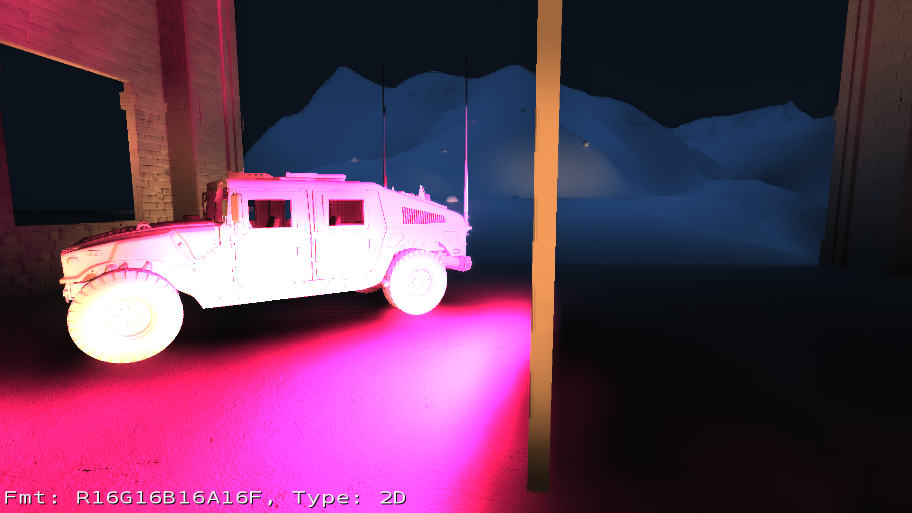 |
Even if GI and Usage Mode is left disabled (the default setting), the mesh still interacts with the GI system, receiving and bouncing GI light. You'll notice in the second row of images (with voxelization revealed through e_svoDebug 6) that neither the Humvee nor the reflector are voxelized, yet GI is clearly in effect, as evidenced in the third row of images, where the output of the GI system is revealed through r_ShowRenderTarget svo_fin.
Static Voxelization mode, seen in the right hand column, provides more accurate bounce light, as you can readily see, as well as in-directional occlusion effects and large scale ambient occlusion. This is the recommended setting for meshes in a level where SVOGI is enabled.
While additional options are offered for analytical occlusion, this should be regarded as still experimental. Read more about using analytical occluders here.
Brush Entity Global Illumination Setting
Similar to the GI and Usage Mode on mesh components, brushes have a setting to enable or disable voxelization: Global Illumination. If you enable this property on a brush, be sure to open the environment editor and toggle Constants → Global Illumination → Update Geometry off and then on to force re-voxelization. Use e_svoDebug 6 in the Console window to verify that the brush is being voxelized.
Debugging and Profiling SVOGI
- r_ShowRenderTarget svo_fin: See the actual light output of the GI system, as shown here. Skylight, whose color is typically set to blue through the Environment Editor's Fog → Color (top) and Color (top) multiplier, will show up as diffuse blue light, while bounce light will show up in this view in the color of the light source (sunlight as well as light components).
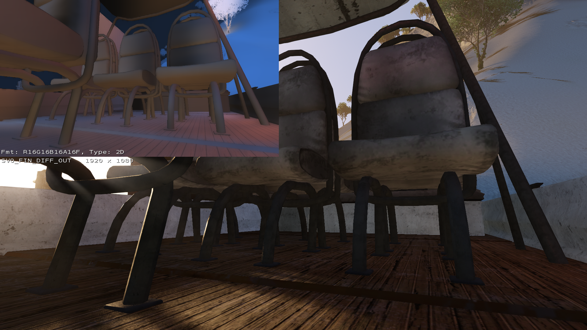
- e_svoDebug 6: See where voxels are being drawn. This is useful for finding GI “holes” in geometry, or areas where light is blocked. Note that voxel size is indicated by color according to distance from the camera, and that by default, voxelization is performed in a 70m radius from the camera.
- r_profiler: analyze the effect of the rendering process on performance, as shown below:
r_profiler 1: GPU profiling information | r_profiler 2: detailed rendering statistics |
|---|---|
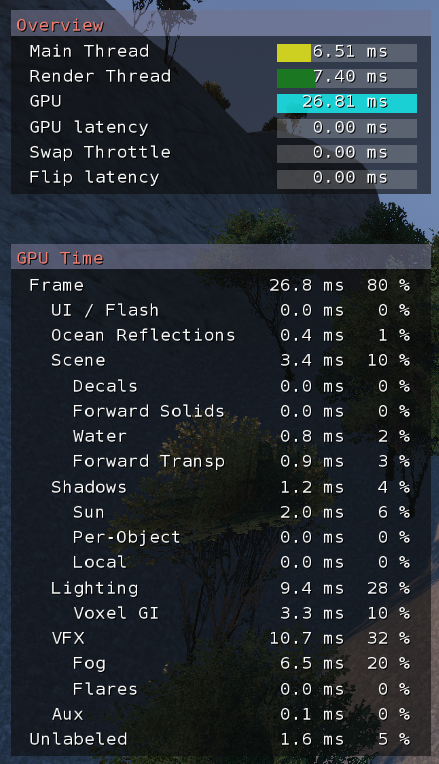 | 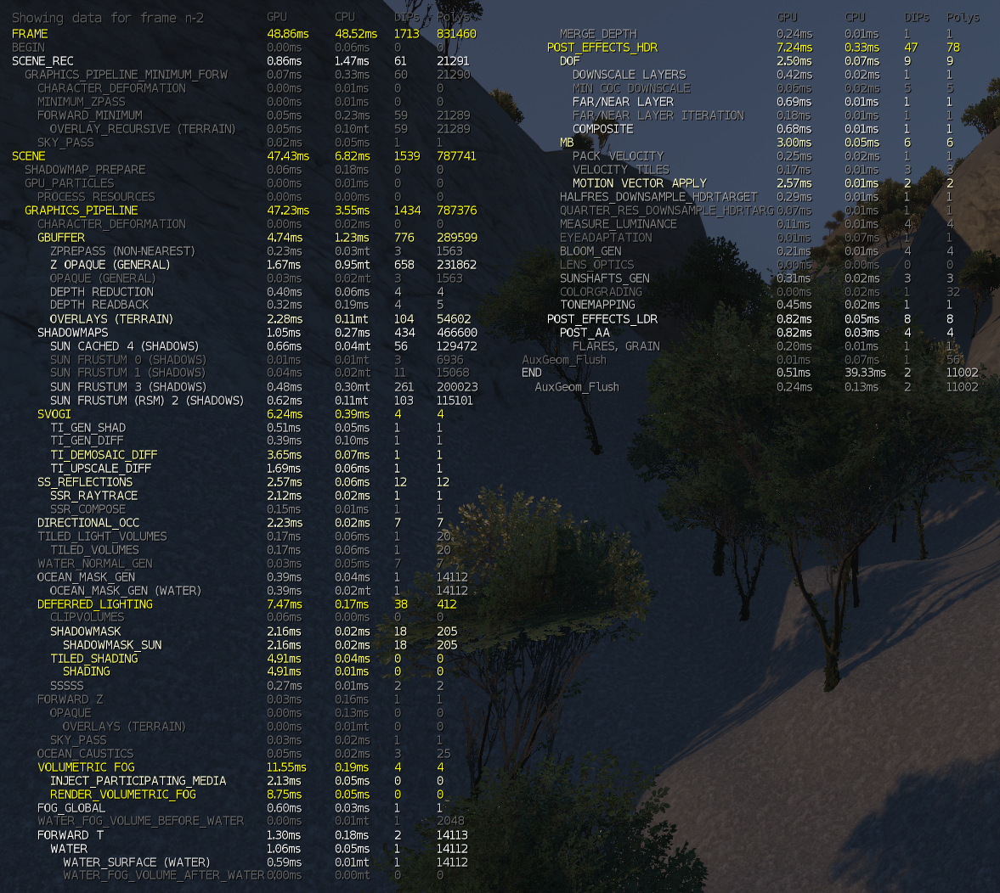 |
SVOGI Tips
- On large, complex levels, it's advisable to bake the SVOGI voxel grid out to disc, for example after major geometry or layout changes: File → Export Svogi Data. This process can be time consuming for complex levels, so you might want to run this as an overnight task.
- For dynamic objects, indirect light bounce works only in areas near voxelized static geometry.
- Large scale ambient occlusion and indirect shadows may be cast properly only by static geometry.
- GI does not work on some forward rendering components, like particles or water.
- Artifacts like ghosting, aliasing, light leaking and noise may be noticeable in some cases.
- Procedural vegetation and merged vegetation do not cast occlusion or secondary shadows.
- If the camera is teleported to a completely new location it may take up to a few seconds until occlusion is working properly.
Supplementing Sunlight
Even after getting your sunlight, skylight, fog, and SVOGI settings configured to your liking, you may still find that interiors, particularly during the day when there is no reason for electric lights to be on, are too dark. In these cases, the best approach is to supplement sunlight using projector lights through any windows. To avoid limitations with the number of simultaneous shadow casters, you can make projector lights look less obvious and hard-edged by adding projection textures in Properties → Projector Options → Projected Texture to break up the wash of light. Any subtle noise pattern will help. This is exactly the approach we took to light interiors on Hunt: Showdown, with projector lights mimicking sunlight in many cases. See the Creating Your Own Projection Textures section of the projector light component tutorial for details.
SVOGI and the Heightmap
If your terrain heightmap has significant hills and valleys, you'll need to enable the engine to cast shadows from the heightmap itself. In other words, the mountains should create shadows in the valleys.
You enable this in Level Settings → Env State → Sun Shadows From Terrain. However, if you have SVOGI enabled, you also need to enable it in SVOGI, otherwise you'll see disappearing and appearing terrain shadows when the camera moves closer and farther away.
You'll find those settings in the Environment Editor under Constants → Total Illumination Advanced → Shadows From Sun and Shadows From Heightmap. If you’re still seeing terrain shadows come and go, you could try disabling shadow caching with r_ShadowsCache 0 in the Console. Note that you may see pixelated edges to the terrain shadows. If possible, try working with Constants → Total Illumination Advanced → Shadows From Sun in the Environment Editor off to remove that artifact.
If your terrain is flat or your sun is very high overhead, you don’t need to bother with this.
While Level Settings are environment-related settings, remember that they’re saved with the level, not with the environment preset, so if you switch environment presets during a game, you may also need to tweak some of your level settings to give you the look you want. For example, you'll find volumetric cloud settings both in the Environment Editor and in Level Settings.
| Shadows from heightmap OFF | Shadows from heightmap ON |
|---|---|
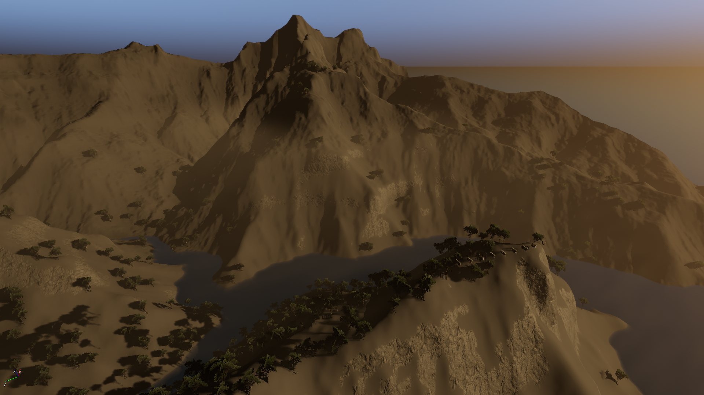 | 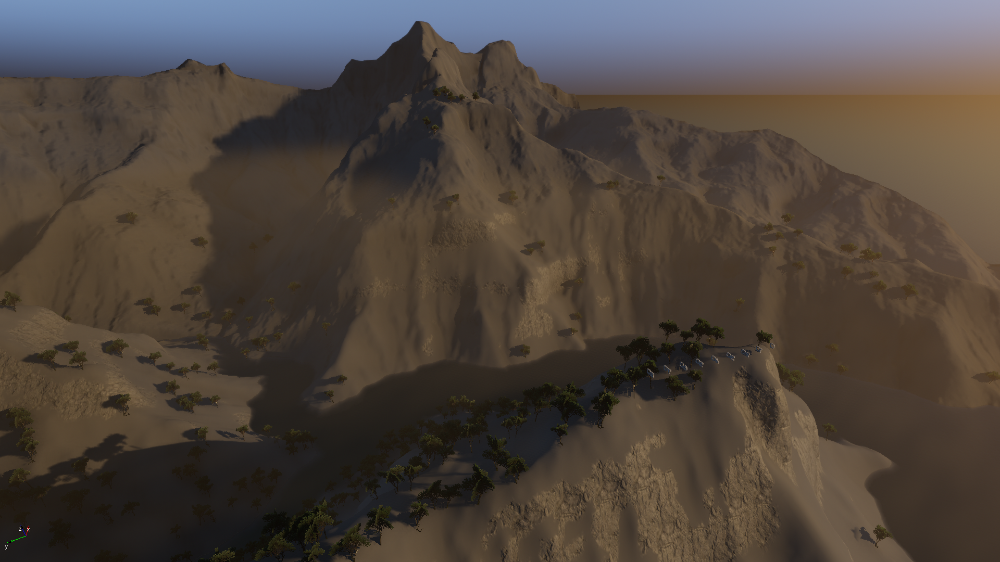 |
Beauty Shots (Stills)
If you're a lighting artist capturing beauty shots for your portfolio, you have the luxury of not worrying about real time performance, and may want to adjust the following parameters as indicated to optimize the visual benefits of SVOGI. Just don't forget to restore these parameters to their original values before saving your environment preset, or else your performance will plummet!
- Cone Max Length: Go ahead and crank this up as high as you prefer to maximize the quality and detail of the global illumination; just make sure you give your system time to re-voxelize before doing a screen capture. (Use e_svoDebug 6 to verify proper voxelization)
- Injection multiplier: while 1 is a good guideline for performance, you can crank this up freely and kick a much brighter bounce light around.
Video Tutorial
This tutorial is also available in video form on our YouTube channel: